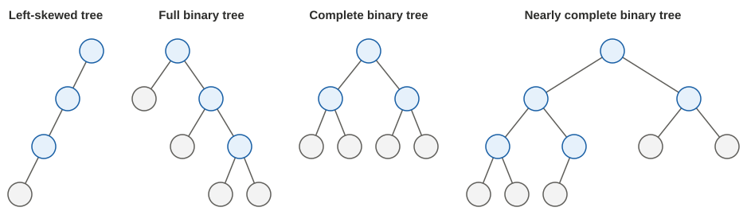

樹(tree)跟 linked list 很類似，都是將資料串起來的結構，看起來就像是一棵樹倒過來長，即開頭的節點稱為根(root)，並從根開始持續分岔，直到抵達葉子(leaf)。其中，一個節點上可以分岔的數量，原則上是沒有特殊限制的，但在大部分的應用中，最多有兩個分岔的二元樹(binary tree)已經很足夠使用，因此本篇主要將介紹二元樹。一棵二元樹的範例如下：

在一棵二元樹上，除了前面提到的開頭節點稱為 root，以及沒有再分岔的節點稱為 leaf 以外，還有以下慣例的稱呼：
- 不是葉子的節點，稱為 non-leaf node 或 internal node；leaf 節點也可以稱為 terminal。
- 左邊和右邊的分岔，各自可以看成一棵小的樹，分別稱為左子樹(left sub-tree)和右子樹(right sub-tree)。
- 對某個節點來說，直接連到自己的那一個節點稱為 parent，自己直接連出去的那幾個節點稱為 child 或 children；含 parent 在內，往上追到 root 的所有節點都是 ancestors；含 child 或 children 在內，往下追到所有葉子的節點都是 descendants。
- 若某些節點有相同的 parent，則這些節點稱為 siblings。
而在實作上，我們只需要把只有一個 next 指標的 linked list 節點，改為有 left 和 right 兩個指標即可。例如若要建出前面圖片的樹，則做法如下：
class TreeNode(object):
def __init__(self, val, left=None, right=None):
self.val = val
self.left = left
self.right = right
# Construct
root = TreeNode('A')
b = TreeNode('B')
c = TreeNode('C')
d = TreeNode('D')
e = TreeNode('E')
f = TreeNode('F')
g = TreeNode('G')
h = TreeNode('H')
root.left = b
root.right = c
b.left = d
b.right = e
e.left = g
e.right = h
c.right = f
# Traverse
print(root.val) # A
print(root.left.val) # B
print(root.right.val) # C
print(root.left.left.val) # D
print(root.left.right.val) # E
print(root.right.right.val) # F
print(root.left.right.left.val) # G
print(root.left.right.right.val) # H
print(root.right.left) # None
print(root.right.left.val) # Leads to error
在上述範例中，是將建構與走訪的路徑寫死在程式碼中；比較正規的走訪甚至建構方式，會在後面介紹。
度量一棵樹時，我們通常會討論其垂直方向的深度或高度，如下：
- 某個節點的深度(depth)的定義，是從 root 到該節點經過了幾條邊；以前面的範例來說，A 的深度是 0，B 和 C 的深度是 1，D、E、F 的深度是 2，G、H 的深度是 3。此外，深度相同的節點屬於同一層(level)。
- 樹的高度(height)則是這棵樹的最大深度，以前面的範例來說，其高度是 3。
需要留意的是，有些書本或題目，會將深度定義為「從 root 到該節點時，包含自己經過了幾個節點」；此時 A 的深度就變成 1，後面依此類推。本教材將以「邊」來定義，但各位在閱讀其他內容時，記得先找找看該內容當中是否有先做定義。
而有些特殊形狀的 tree，我們對它們也有特殊的稱呼，如下：
- 所有的 non-leaf nodes 都只有左子樹或都只有右子樹時，稱為左歪斜樹(left-skewed tree)或右歪斜樹(right-skewed tree)。
- 所有的 nodes 的子節點個數都是 0 或 2 時，稱為 full binary tree。
- 2n - 1 個節點，長成高度 n - 1 的 tree 時，即整棵樹看上去是個完整的三角形時，稱為 complete binary tree。
- 將 complete binary tree 拔掉最下層最右邊起的幾片葉子時，稱為 nearly complete binary tree。
上述幾種樹的範例如下：

仍然需要留意的是，有些書本或題目，對這些稱呼會有不同的定義，因此各位在閱讀其他內容時，記得先找找看該內容當中是否有先做定義。